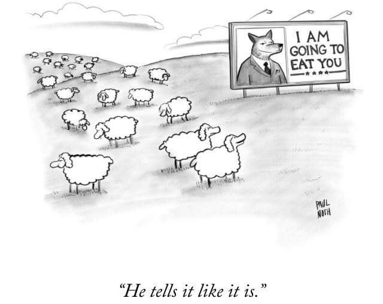

Welcome to Constantina's page
..work in

|
My country

Poster prize |
DBS checked
|
Interests
Electronic music
Photography/Design
Testing my creative skills, I made this for a charity event using Gimp:
Come back for news on my upcoming photography portofolio page.
Speleology and rock climbing


Photo of
Member of the Italian Alpinian CLub and Florentine Speleology Group GSF-CAI
Philosophy of Science
-
The philosophical implications of Quantum Mechanics
The particle-wave duality -
Is there free will?
Answer -
Combination of Mathematics with Psychology
-
Evolutionary Psychology
"Everyone possesses a sense of justice, however misguided it may be. How do people acquire this sense? Where does it come from? In this chapter, I argue that to account for the acquisition of a sense of justice, we must identify the mental mechanisms that produce it and explain how they originated and became refi ned in the course of human evolution. Explaining how a sense of justice originated in the human species helps us understand what it is, what it is for, how it is designed, what activates it, and why it sometimes fails to give rise to fair judgments and behaviors."
The Evolution of a Sense of Justice, by Dennis L. Krebs
<Cit. -
Politics in our times

"Asymptote: something one desires, and that is approaching in a constant manner, but never quite manages to fulfill."
A little bit of etymology and history: The word asymptote is derived from the Greek ἀσύμπτωτος (asumptōtos) which means "not falling together", from ἀ priv. + σύν "together" + πτωτ-ός "fallen".The term was introduced by Apollonius of Perga in his work on conic sections, but in contrast to its modern meaning, he used it to mean any line that does not intersect the given curve.
Letting Go of God, by Julia Sweeny
I’m embarrassed to report that I initially felt dizzy. I actually had the thought, ‘Well,how does the Earth stay up in the sky? You mean, we’re just hurtling through space?That’s so vulnerable!’ I wanted to run out and catch the Earth as it fell out of space into my hands.And then I remembered, ‘Oh yeah, gravity and angular momentum is gonna keep us revolving around the sun for probably a long, long time.’